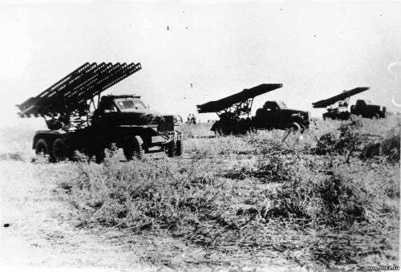
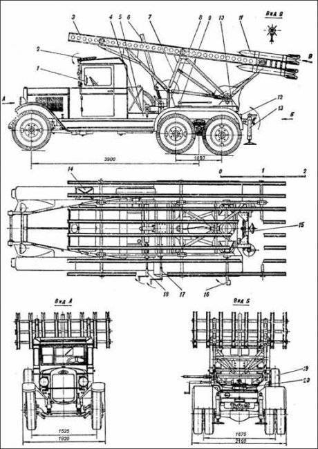
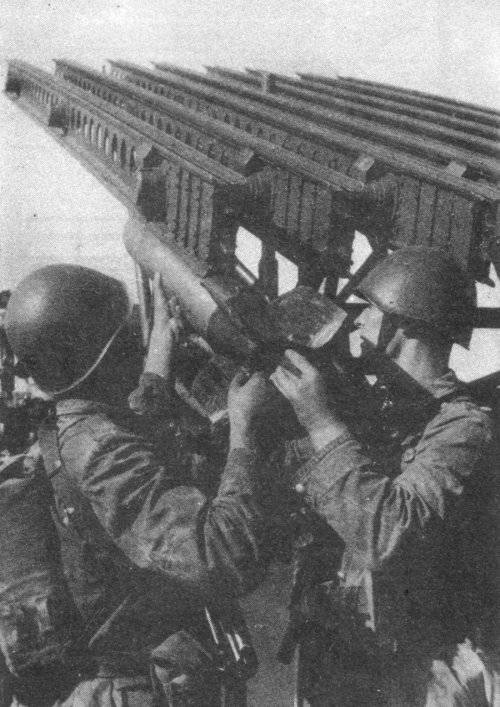
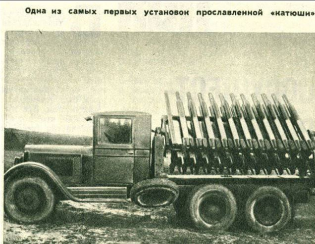
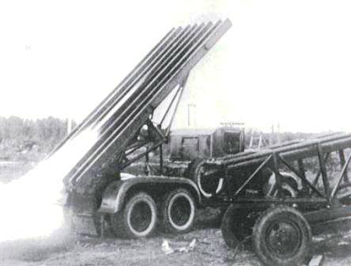
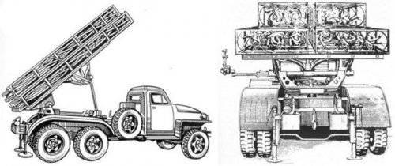

Осколочно-фугасный снаряд "М-13"

Знаменитая «катюша» оставила свой незабываемый след в истории Великой Отечественной войны с тех самых пор, как 14 июля 1941 года это секретное оружие под командованием капитана И. А. Флерова буквально стерло с лица земли вокзал в городе Орше вместе с находившимися на нем немецкими эшелонами с войсками и техникой. Первые образцы реактивных снарядов, запускаемых с передвижного носителя (машины на базе грузового автомобиля «ЗИС-5»), испытывали на советских полигонах с конца 1938 г. 21 июня 1941 года их продемонстрировали руководителям Советского правительства, и буквально за несколько часов до начала Великой Отечественной войны было принято решение о срочном развертывании серийного производства реактивных снарядов и пусковой установки, получившей официальное название «БМ-13».
Это было воистину оружие небывалой силы — дальность полета снаряда достигала восьми с половиной километров, а температура в эпицентре взрыва — полутора тысяч градусов. Немцы неоднократно пытались захватить образец русской чудо-техники, но экипажи «катюш» строжайше выдерживали правило — попасть в руки врага им было нельзя. На критический случай машины были снабжены механизмом самоликвидации. От тех легендарных установок идет, по сути, вся история российской ракетной техники. А реактивные снаряды для «катюш» разработал Владимир Андреевич Артемьев. Он родился в 1885 году в Петербурге в семье военнослужащего, окончил петербургскую гимназию и ушел добровольцем на Русско-японскую войну. За мужество и храбрость был произведен в младшие унтер-офицеры и награжден Георгиевским крестом, затем окончил Алексеевское юнкерское училище. В начале 1920 года Артемьев познакомился с Н. И. Тихомировым и стал его ближайшим помощником, однако в 1922 году на волне общей подозрительности к бывшим офицерам царской армии был заключен в концлагерь. Вернувшись с Соловков, продолжил заниматься совершенствованием реактивных снарядов, работу над которыми начал еще в двадцатых годах и прервал в связи с арестом. В период Великой Отечественной войны им было сделано много ценных изобретений в области военной техники.
После войны В. А. Артемьев, будучи главным конструктором ряда научно-исследовательских и проектных институтов, создавал новые образцы ракетных снарядов, был награжден орденами Трудового Красного Знамени и Красной Звезды, являлся лауреатом Сталинских премий. Умер 11 сентября 1962 г. в Москве. Его имя есть на карте Луны: в память о создателе «катюши» назван один из кратеров на ее поверхности.
«Катюша» — неофициальное собирательное название боевых машин реактивной артиллерии БМ-8 (82 мм), БМ-13 (132 мм) и БМ-31 (310 мм). Такие установки активно использовались СССР во время Второй мировой войны.
После принятия на вооружение авиации 82-мм реактивных снарядов класса "воздух-воздух" РС-82 (1937 год) и 132-мм реактивных снарядов класса "воздух-земля" РС-132 (1938 год) Главное артиллерийское управление поставило перед разработчиком снарядов – Реактивным НИИ – задачу создания реактивной полевой системы залпового огня на основе снарядов РС-132. Уточненное тактико-техническое задание было выдано институту в июне 1938 года.
В соответствии с этим заданием к лету 1939 года институт разработал новый 132-мм осколочно-фугасный снаряд, получивший позднее официальное название М-13. По сравнению с авиационным РС-132 этот снаряд имел большую дальность полета и значительно более мощную боевую часть. Увеличение дальности полета было достигнуто за счет увеличения количества ракетного топлива, для этого потребовалось удлинить ракетную и головную части реактивного снаряда на 48 см. Снаряд М-13 имел несколько лучшие, чем РС-132, аэродинамические характеристики, что позволило получить более высокую кучность.

К снаряду была разработана также самоходная многозарядная пусковая установка. Первый ее вариант был создан на базе грузового автомобиля ЗИС-5 и обозначался МУ-1 (механизированная установка, первый образец). Проведенные в период с декабря 1938 года по февраль 1939 года полигонные испытания установки показали, что она не в полной мере отвечает поставленным требованиям. С учетом результатов испытаний Реактивный НИИ разработал новую пусковую установку МУ-2, которая в сентябре 1939 года была принята Главным артиллерийским управлением для полигонных испытаний. По результатам окончившихся в ноябре 1939 года полигонных испытаний институту были заказаны пять пусковых установок для проведения войсковых испытаний. Еще одну установку заказало Артиллерийское управление Военно-Морского Флота для использования ее в системе береговой обороны.
21 июня 1941 года установка была продемонстрирована руководителям ВКП(6) и Советского правительства, и в тот же день, буквально за несколько часов до начала Великой Отечественной войны, было принято решение о срочном развертывании серийного производства реактивных снарядов М-13 и пусковой установки, получившей официальной название БМ-13 (боевая машина 13).

Производство установок БМ-13 было организовано на воронежском заводе им. Коминтерна и на московском заводе "Компрессор". Одним из основных предприятий по выпуску реактивных снарядов стал московский завод им. Владимира Ильича.
В ходе войны производство пусковых установок в срочном порядке было развернуто на нескольких предприятиях, обладавших различными производственными возможностями, в связи с этим в конструкцию установки вносились более или менее существенные изменения. Таким образом, в войсках использовалось до десяти разновидностей пусковой установки БМ-13, что затрудняло обучение личного состава и отрицательно сказывалось на эксплуатации боевой техники. По этим причинам была разработана и в апреле 1943 года принята на вооружение унифицированная (нормализованная) пусковая установка БМ-13Н, при создании которой конструкторы критически проанализировали все детали и узлы в целях повышения технологичности их производства и снижения стоимости, в результате чего все узлы получили самостоятельные индексы и стали универсальными.

Состав
В состав БМ-13"Катюша" входят следующие боевые средства:
Боевая машина (БМ) МУ-2 (МУ-1) ;
Реактивные снаряды.
Реактивный снаряд М-13:
Снаряд М-13 (см. схему) состоит из головной части и порохового реактивного двигателя. Головная часть по своей конструкции напоминает артиллерийский осколочно-фугасный снаряд и снаряжена зарядом взрывчатого вещества, для подрыва которого используются контактный взрыватель и дополнительный детонатор. Реактивный двигатель имеет камеру сгорания, в которой помещен пороховой метательный заряд в виде цилиндрических шашек с осевым каналом. Для воспламенения порохового заряда используются пирозапалы. Образующиеся при горении пороховых шашек газы истекают через сопло, перед которым расположена диафрагма, препятствующая выбросу шашек через сопло. Стабилизация снаряда в полете обеспечивается с помощью хвостового стабилизатора с четырьмя перьями, сваренными из стальных штампованных половинок. (Такой способ стабилизации обеспечивает более низкую кучность по сравнению со стабилизацией вращения вокруг продольной оси, однако позволяет получить большую дальность полета снаряда. Кроме того, использование оперенного стабилизатора весьма существенно упрощает технологию производства реактивных снарядов).

Дальность полета снаряда М-13 достигала 8470 м, но при этом имело место весьма значительное рассеивание. По таблицам стрельбы 1942 года, при дальности стрельбы 3000 м боковое отклонение составляло 51 м, а по дальности — 257 м.
В 1943 году был разработан модернизированный вариант реактивного снаряда, получивший обозначение М-13-УК (улучшенной кучности). Для повышения кучности стрельбы у снаряда М-13-УК в переднем центрирующем утолщении ракетной части выполнены 12 тангенциально расположенных отверстий, через которые во время работы ракетного двигателя выходит часть пороховых газов, приводящая снаряд во вращение. Хотя дальность полета снаряда при этом несколько уменьшилась (до 7,9 км), улучшение кучности привело к уменьшению площади рассеивания и к возрастанию плотности огня в 3 раза по сравнению со снарядами М-13. Принятие снаряда М-13-УК на вооружение в апреле 1944 года способствовало резкому увеличению огневых возможностей реактивной артиллерии.
Пусковая установка РСЗО"Катюша":
К снаряду разработана самоходная многозарядная пусковая установка. Первый ее вариант - МУ-1 на базе грузового автомобиля ЗИС-5 - имел 24 направляющих, установленных на специальной раме в поперечном положении по отношению к продольной оси автомобиля. Ее конструкция позволила производить пуск реактивных снарядов только перпендикулярно продольной оси автомашины, причем струи горячих газов повреждали элементы установки и корпус ЗИС-5. Не обеспечивалась также безопасность при управлении огнем из кабины водителя. Пусковая установка сильно раскачивалась, что ухудшало кучность стрельбы реактивных снарядов. Заряжание пусковой установки с передней части направляющих производить было неудобно и требовало много времени. Автомашина ЗИС-5 имела ограниченную проходимость.
Более совершенная пусковая установка МУ-2 (см. схему) на базе грузового автомобиля повышенной проходимости ЗИС-6 имела 16 направляющих, расположенных вдоль оси автомобиля. Каждые две направляющие соединялись, образуя единую конструкцию, именовавшуюся "спаркой". В конструкцию установки был введен новый узел – подрамник. Подрамник позволил вести сборку всей артиллерийской части пусковой установки (как единого агрегата) на нем, а не на шасси, как было ранее. В собранном виде артиллерийская часть относительно легко монтировалась на шасси любой марки автомобиля при минимальной доработке последней. Созданная конструкция позволила уменьшить трудоемкость, время изготовления и стоимость пусковых установок. Вес артиллерийской части был снижен на 250 кг, стоимость – более чем на 20 процентов.Существенно повышены были и боевые и эксплуатационные качества установки. За счет введения бронирования бензобака, бензопровода, боковых и задней стенок кабины водителя была повышена живучесть пусковых установок в бою. Был увеличен сектор обстрела, повысилась устойчивость пусковой установки в походном положении, усовершенствованные подъемный и поворотный механизмы позволили увеличить скорость наведения установки на цель. Перед пуском боевая машина МУ-2 поддомкрачивалась аналогично МУ-1. Силы, раскачивающие пусковую установку, благодаря расположению направляющих вдоль шасси автомашины, прилагались по ее оси на два домкрата, находившиеся вблизи центра тяжести, поэтому раскачивание стало минимальным. Заряжание в установке производилось с казенной части, то есть с заднего конца направляющих. Это было удобнее и позволяло значительно ускорить операцию. Установка МУ-2 имела поворотный и подъемный механизмы простейшей конструкции, кронштейн для крепления прицела с обычной артиллерийской панорамой и большой металлический бак для горючего, установленный сзади кабины. Стекла кабины закрывались броневыми откидными щитами. Напротив сиденья командира боевой машины на передней панели был смонтирован небольшой прямоугольный ящичек с вертушкой, напоминающий диск телефонного аппарата, и рукояткой для поворачивания диска. Этот прибор носил название "пульт управления огнем" (ПУО). От него шел жгут проводов к специальному аккумулятору и к каждой направляющей.

Пусковая установка БМ-13 «Катюша» на шасси Studebaker (6x4)
При одном обороте рукоятки ПУО происходило замыкание электроцепи, срабатывал пиропатрон, помещенный в передней части ракетной камеры снаряда, воспламенялся реактивный заряд и происходил выстрел. Темп стрельбы определялся темпом вращения рукоятки ПУО. Все 16 снарядов можно было выпустить за 7—10секунд. Время перевода пусковой установки МУ-2 из походного в боевое положение составляло 2-3 минуты, угол вертикального обстрела находился в пределах от 4° до 45°, угол горизонтального обстрела составлял 20°.
Конструкция пусковой установки допускала ее передвижение в заряженном состоянии с довольно высокой скоростью (до 40 км/ч) и быстрое развертывание на огневой позиции, что способствовало нанесению внезапных ударов по противнику.
Существенным фактором, повышающим тактическую мобильность частей реактивной артиллерии вооруженных установками БМ-13Н, стало то, что в качестве базы для пусковой установки был использован мощный американский грузовой автомобиль "Студебеккер US 6х6", поставлявшийся в СССР по ленд-лизу. Этот автомобиль имел повышенную проходимость, обеспечивающуюся мощным двигателем, тремя ведущими осями (колесная формула 6х6), демультипликатором, лебедкой для самовытаскивания, высоким расположением всех частей и механизмов, чувствительных к воздействию воды. Созданием этой пусковой установки была окончательно завершена отработка серийной боевой машины БМ-13. В таком виде она и провоевала до конца войны.
Испытания и эксплуатация
Первая батарея полевой реактивной артиллерии, отправленная на фронт в ночь с 1 на 2 июля 1941 года под командованием капитана И.А.Флерова, была вооружена семью установками, изготовленными Реактивным НИИ. Своим первым залпом в 15 часов 15 минут 14 июля 1941 года батарея стерла с лица земли железнодорожный узел Орша вместе с находившимся на нем немецкими эшелонами с войсками и боевой техникой.
Исключительная эффективность действий батареи капитана И. А. Флерова и сформированных вслед за ней еще семи таких батарей способствовали быстрому наращиванию темпов производства реактивного вооружения. Уже с осени 1941 года на фронтах действовало 45 дивизионов трехбатарейного состава по четыре пусковых установки в батарее. Для их вооружения в 1941 году было изготовлено 593 установки БМ-13. По мере поступления боевой техники от промышленности началось формирование полков реактивной артиллерии, состоявших из трех дивизионов, вооруженных пусковыми установками БМ-13 и зенитного дивизиона. Полк имел 1414 человек личного состава, 36 пусковых установок БМ-13 и 12 зенитных 37-мм пушек. Залп полка составлял 576 снарядов калибра 132мм. При этом живая сила и боевая техника противника уничтожалась на площади свыше 100 гектаров. Официально полки назывались гвардейскими минометными полками артиллерии резерва Верховного Главнокомандования.